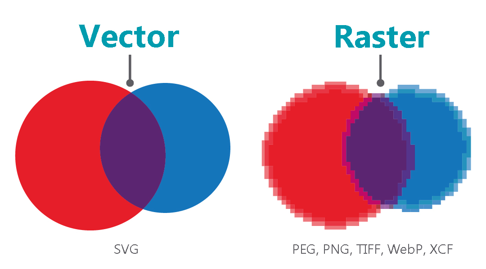
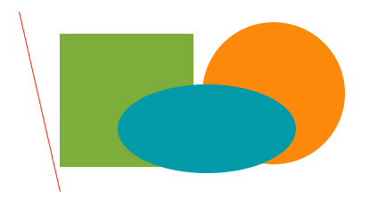

Scalable Vector Graphics
SVG
Created by Yliya Pekhota SVG is an Extensible Markup Language (XML)-based vector image format for two-dimensional graphics with support for interactivity and animation. The SVG specification is an open standard developed by the World Wide Web Consortium (W3C) since 1999.
Why use SVG at all?
Drawing Shapes with SVG
We can draw some basic shapes like the rectangle, circle, line, ellipse, polyline and polygon
all those graphic elements need to be inserted within the svg tag.
Line
Rectangle
Circle
Ways to use SVG
Using SVG as an <img>

Using SVG as a background-image
Logo
.logo {
display: block;
text-indent: -9999px;
width: 100px;
height: 82px;
background: url(image.svg);
background-size: 100px 82px;
}
Using inline SVG code.
<body>
</body>Where SVGs differ is that the code inside the file can be copied and pasted directly on a page to display the image. This method allows for more control over manipulating the image.
As you can see, SVG is a beneficial tool for displaying vector-based images on your website.
Thanks for attention